O Nosso Processo Artesanal
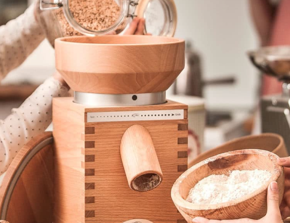
1. Moagem
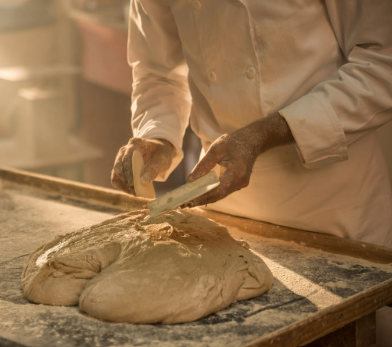
2. Amassar
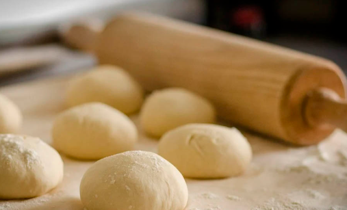
3. Repouso
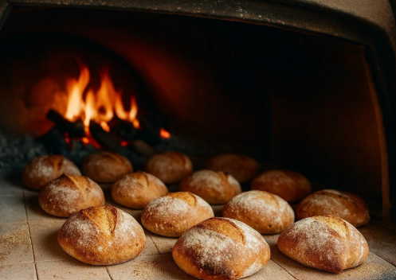
4. Forno
Resumo do processo: primeiro moemos o grão para obter a farinha; depois amassamos à mão a farinha com água, sal e massa-mãe; a massa repousa e fermenta durante horas; por fim, coze-se em forno a lenha até o pão ficar dourado.
Padaria Tradicional

Pão de Massa-Mãe
Ingredientes: Farinha de trigo biológica, água, massa-mãe natural e sal marinho.
Preparação: Fermentação lenta de 24 horas e cozedura em soleira de pedra.
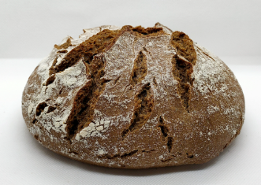
Pão de Centeio
Ingredientes: Farinha de centeio integral, água, massa-mãe de centeio e sal.
Preparação: Amassadura suave, fermentação prolongada no frio e côdea firme.
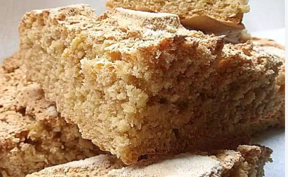
Pão de Milho
Ingredientes: Farinha de milho tradicional, farinha de trigo de força, água e fermento.
Preparação: Escaldão prévio do milho ao estilo da fronteira e cozedura lenta.

Pão Integral 100%
Ingredientes: Farinha de trigo 100% integral com todo o grão, água e sal marinho.
Preparação: Repouso em bloco para desenvolver aromas e cozedura macia.

Baguette
Ingredientes: Farinha de trigo branca de força, água purificada, fermento e sal marinho.
Preparação: Formato alongado clássico, côdea muito estaladiça e miolo branco muito arejado.

Ciabatta (Chiapata)
Ingredientes: Farinha de trigo de alta força, elevada hidratação de água, massa-mãe e sal.
Preparação: Formato plano rústico de origem italiana com miolo alveolado ideal para sanduíches.

Mollete Andaluz
Ingredientes: Farinha de trigo suave, água, uma pitada de banha ou azeite e sal.
Preparação: Pãozinho branco ovalado de côdea macia e miolo tenro, ideal para torrar.

Pão Candeal (de Cruz)
Ingredientes: Farinha de trigo candeal de baixa força, água fina, massa-mãe e sal.
Preparação: Amassadura lenta com rolos que resulta num miolo branco denso e côdea lisa.

Pão de Pagès
Ingredientes: Farinha de trigo tradicional, água, cultura de massa-mãe viva e sal marinho.
Preparação: Broa redonda camponesa feita em forno de lenha com um miolo tenro muito duradouro.
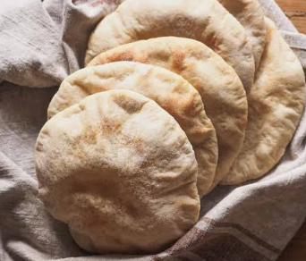
Pão Pita
Ingredientes: Farinha de trigo branca refinada, água morna, fermento de padeiro e sal.
Preparação: Pão plano do Médio Oriente cozido a alta temperatura para criar a sua bolsa interior.

Focaccia Italiana
Ingredientes: Farinha de força, água, abundante azeite virgem extra, sal grosso e alecrim.
Preparação: Pão plano espesso fermentado diretamente no tabuleiro para obter uma textura fofa.
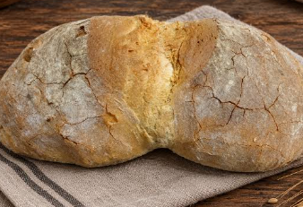
Pão de Cea (I.G.P.)
Ingredientes: Farinha de trigo regional, água pura de nascente, massa-mãe própria e sal.
Preparação: Amassadura artesanal galega com uma fenda central característica e sabor ligeiramente ácido.
Pastelaria e Padaria
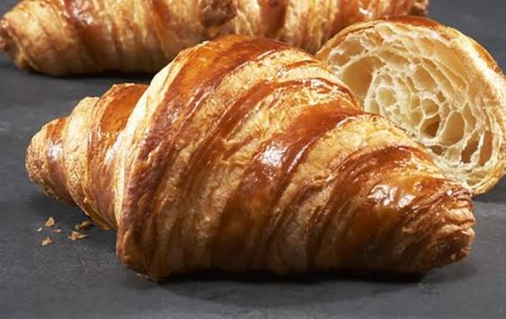
Croissant Artesanal
Ingredientes: Farinha de trigo forte, manteiga pura, açúcar e levedura.
Preparação: Folhado à mão com múltiplas camadas e cozido no forno até dourar.

Pastel de Creme
Ingredientes: Massa folhada fina, creme pasteleiro artesanal infundido com canela e limão.
Preparação: Cozedura crocante da base e recheado a frio para manter a cremosidade.
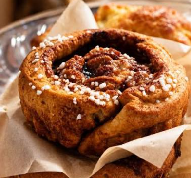
Suíços de Açúcar
Ingredientes: Massa de brioche tenra, água de flor de laranjeira, ovo e açúcar granulado por cima.
Preparação: Dupla fermentação manual para um miolo super fofo e cozedura rápida no forno.

Palmier de Chocolate
Ingredientes: Massa folhada artesanal invertida, açúcar caramelizado e cobertura de chocolate puro.
Preparação: Estendido e dobra tradicional, cozedura intensa no forno e banho quente em chocolate.
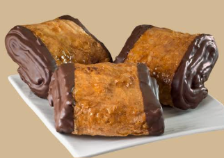
Napolitana de Chocolate
Ingredientes: Massa folhada tenra, creme de chocolate derretido e granulado de chocolate ou amêndoa picada.
Preparação: Enrolado tradicional da massa com duplo ponto de recheio, cozido no forno e decorado na superfície.
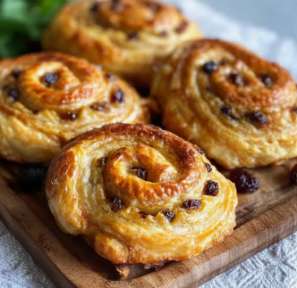
Caracol de Passas
Ingredientes: Espiral de massa folhada ou brioche, creme pasteleiro fino, passas de uva sultanas e geleia de brilho para pastelaria.
Preparação: Distribuição do recheio em camada fina, enrolado em cilindro, corte em fatias e cozido no forno.
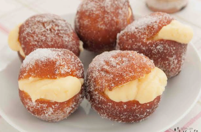
Bola de Berlim de Creme
Ingredientes: Massa fina e fofa, açúcar granulado para polvilhar e creme pasteleiro suave.
Preparação: Fritura artesanal controlada da massa, envolvida imediatamente em açúcar e recheada generosamente com creme.

Ensaimada
Ingredientes: Massa açucarada tradicional, banha de porco, farinha de trigo forte e açúcar em pó.
Preparação: Estendido milimétrico da massa, untada, moldada à mão em espiral e cozedura definitiva no forno.
Empadas Caseiras

Empada de Atum Galega
Ingredientes: Massa de pão estaladiça, refogado tradicional de cebola, pimentos e atum.
Preparação: Recheio caseiro temperado e cozido lentamente para unir os sabores.

Empada de Carne Picada
Ingredientes: Farinha de trigo, carne de vaca selecionada, cebola, ovo cozido e especiarias.
Preparação: Guisado de carne em lume brando, com o ponto certo de suculência antes de ir ao forno.
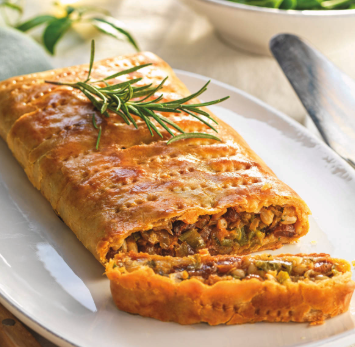
Empada de Bacalhau com Passas
Ingredientes: Massa artesanal, bacalhau desfiado e demolhado, cebola estufada e passas doces.
Preparação: Contraste agridoce tradicional, montado à mão e cozido em forno de pedra.
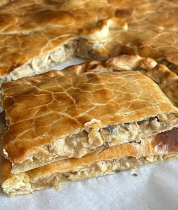
Empada de Frango e Cogumelos
Ingredientes: Massa fina estaladiça, peito de frango desfiado, cogumelos e refogado suave.
Preparação: Recheio cremoso selado com o lacre artesanal da casa e dourado na perfeição.
Onde nos Encontrar
Morada: Av. da Raia, S/N - Fronteira Luso-Espanhola
| Telefone: | +34 900 000 000 |
|---|---|
| Email: | migas_amigas@gmail.com |
| Facebook: | /migasamigas |
| Instagram: | @migas_amigas |
Castelo Branco é uma vila que se encontra entre Espanha e Portugal.